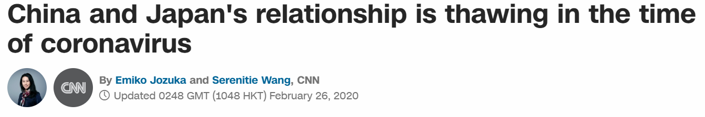
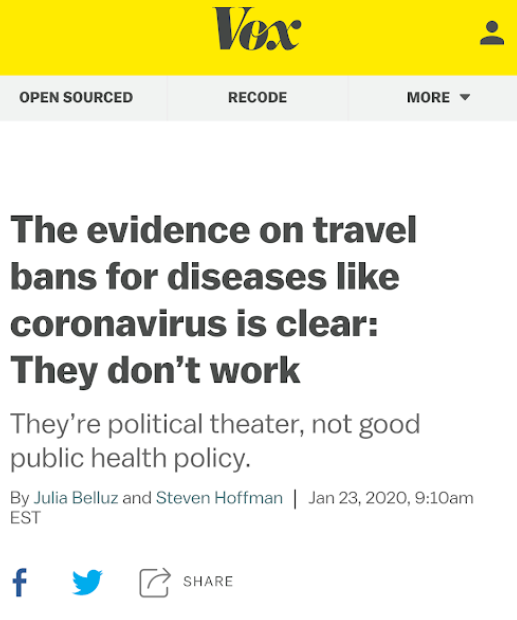
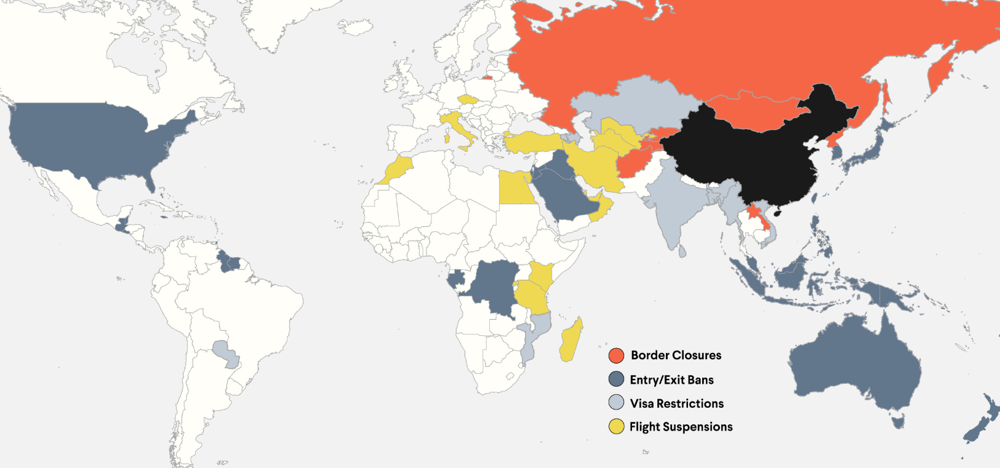
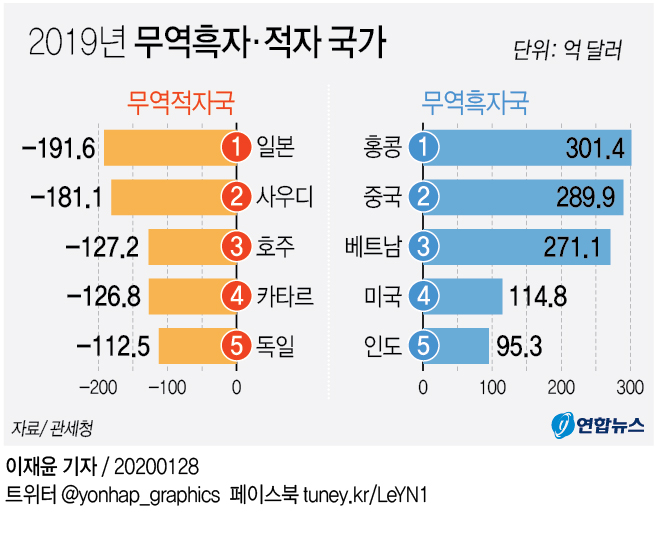
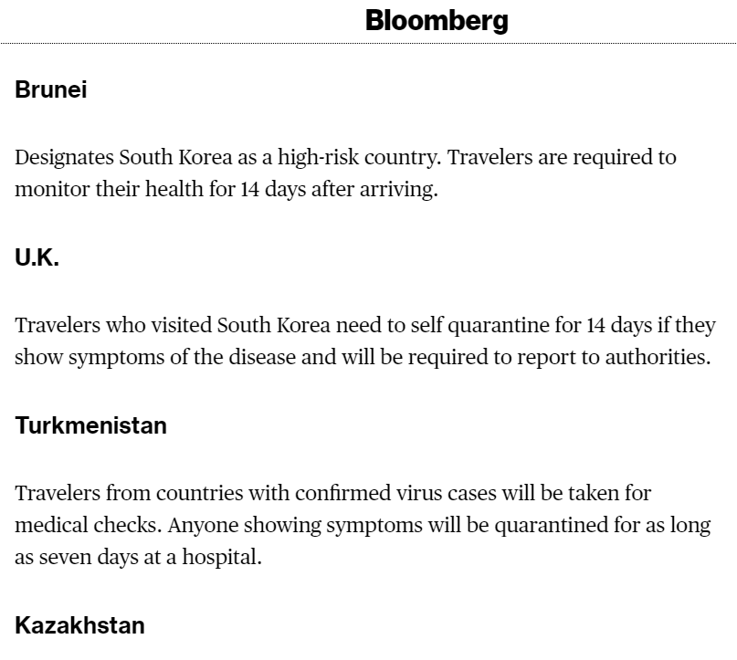

코로나-19와 마스크 등에 대한 팩트 체크
게시: 2020-02-26T23:07:43+09:00
원래 의미없는 댓글에 반응하지 않으려 노력합니다만, 하도 악의와 증오심에 불타는 괴담들이 많아서 인도주의적 차원에서 짧게 씁니다.
1. 한국 정부가 좌파 친중이라서 자국민은 내버려두고 중국에게 마스크 3백만장을 조공바쳤다라는 주장 한국 정부가 보낸 것은 없고, 지자체나 민간단체가 보낸 마스크가 있습니다. 그 양이 3백만장인지는 잘 모르겠습니다만, 그래봐야 국내 하루 생산량의 절반도 안되는 양입니다. 무엇보다, 일본도 지자체나 민간단체들이 주도해서 중국에 마스크 3백만장을 포함한 의료품을 보냈습니다. 일본 정부가 좌파 친중이라서 그러겠습니까 ? 일본도 이런 난리 속에서 어떻게든 중국과의 관계 개선을 위해 안간힘을 쓰고 있는 것이지요. https://edition.cnn.com/2020/02/25/asia/japan-china-coronavirus-enemies-to-friends-hnk-intl/index.html

심지어 대표적인 새누리당-자유당-미통당이 시장을 맡고 있는 대구에서도 중국에 마스크를 보냈습니다.
https://news.joins.com/article/23698267
"가족과 같은 우한" 마스크 1만 8700장 중국 우한에 보내는 대구시
중국 우한에 '대구발' 마스크 1만 8700장이 전해진다.
news.joins.com
그러면 왜 이렇게 마스크가 부족하냐 ? 간단합니다. 마스크 제조 기업으로서는 중국에 수출하는 것이 훨씬 더 돈이 되기 때문입니다. 제 지인의 지인, 그러니까 저는 모르는 분 동생이 마스크 공장을 운영하는데, 최근 아예 중국인으로부터 '마스크 공장을 사겠다'라는 제안을 받았답니다. 안 팔았다는데, 주변에서는 '그 돈이면 파는게 맞을 것 같다'라는 말을 많이 들었답니다. 그렇게 중국으로 수출을 못하게 막았어야 하는데 정부가 친중파라서 그러지 않았다는 주장도 있던데, 글쎄요, 저도 정부가 그 조치를 뒤늦게 취한 것이 아쉽습니다. 그러나 그렇게 민간기업의 영업을 정부가 마음대로 규제하는 것은 우파들이 매우 싫어하는 일입니다. 마스크 기업으로서는 10억에 팔 수 있는 물건을 정부 규제에 따라 2억 정도에 팔아야 하니까요. 2. 중국인 입국을 막았어야 했고, 지금이라도 막아야 한다는 주장 바레인은 2월13일부터 미국처럼 최근 14일 이내에 중국에 체류했던 모든 사람을 입국 금지했습니다. 그게 가능했던 이유 중 하나가, 사실 중국인들의 입국이 많은 나라가 아니기 때문이었습니다. 그러나 아무 효과 없었습니다. 오늘까지 26명의 확진자를 냈습니다. 이탈리아는 흔히 중국인의 입국을 금지한 나라라고 보도 되었지만, 그건 오보입니다. 그런 것은 바레인처럼 중국과의 교류가 많지 않거나 미국처럼 무서울 것이 없는 나라나 할 수 있는 일입니다. 무엇보다, 이탈리아는 EU의 일원으로서 셍겐(Schengen) 조약에 가입되어 있으니, 자기 마음대로 입국 금지를 시킬 수도 없고 의미도 없습니다. 다만 이탈리아는 일종의 꼼수로서 중국으로부터 오는 모든 항공편을 취소시켰습니다. 그러나 역시 아무 효과 없었습니다. 아시다시피 이탈리아 북부 롬바르디아에서 오늘까지 374명의 확진자를 냈습니다. 그나마 중국인으로부터 옮은 것도 아니었습니다. 중국에 다녀온 친구를 만난 38세의 이탈리아 남자로부터 시작되었다고 합니다.
https://time.com/5789247/italian-towns-close-covid-19-cases/

https://www.vox.com/2020/1/23/21078325/wuhan-china-coronavirus-travel-ban
기본적으로, 중국인 입국 금지는 어디까지나 정치적인 선동이자 정치적인 쇼우일 뿐, 결코 전염병 확산에 유효한 수단은 아닙니다. 정부가 친중 노선을 걷는 좌파 정권이라고 쳐도, 중국인 입국 금지를 할 경우 정권이 얻는 것이 무엇이 있겠습니까 ? 중국으로부터 몰래 뒷돈이라도 받나요 ? 중국이 왜 그렇게 하지요 ? 투르크메니스탄이 현재 시행 중인 한국인 입국 금지를 풀어주면 우리나라로부터 뒷돈이라도 받나요 ? 정권로서는 불법적인 이익을 얻을 것이 없습니다. 반대로, 모든 정권의 기본적인 소원 중 하나는 재집권이자 득표인데, 가장 쉬운 득표 방법은 그냥 중국인 입국 금지를 해버리는 것입니다. 그런데 그러지 않는 이유는 간단합니다. 아무 효과가 없을 뿐만 아니라, 경제만 망가지기 때문입니다.
정작 그렇게 중국인 입국을 전면적으로 금지하는 대표적 국가 중에는 대표적인 친중 독재 국가인 북한이 있습니다. 중국인 입국 금지를 주장하시는 분들 중에는 그냥 현정부가 미워서 그런 주장을 하시는 분들도 많던데, 자신들이 북한 김정은과 같은 노선을 걷고 있다는 생각이 들지 않으십니까 ? 그리고 과연 북한은 현재 확진자 수가 0명일까요 ? 앞으로도 과연 그렇게 될 수 있을까요 ? 몰래 중국에 오가는 사람들이 있지 않을까요 ?

(중국에 대한 각국별 입국 규제 현황입니다. 저 표에서 우리나라는 러시아나 북한처럼 아예 국경 봉쇄보다는 한단계 낮은 Entry/Exit Ban으로 분류되어 미국/일본/호주/사우디 등과 같은 수준이라고 표시되어 있습니다만, 사실 정확하게는 일본과 같은 수준이라고 보시면 됩니다. 서유럽은 물론 캐나다도 중국에 대해서 입국 제한 조치를 취하지 않고 있습니다. 그림 출처는 https://www.thinkglobalhealth.org/article/travel-restrictions-china-due-covid-19 입니다.)
정작 국내에서 코로나-19의 확산에 가장 결정적인 역할을 한 것은 (물론 사이비 이단 종교가 없었다면 그런 일도 없었겠지만) 종교 활동입니다. 좁은 실내에 많은 인원이 모여 침을 튀기며 기도하고 노래를 부르니까요. 확산을 막기 위해서는 모든 종교 활동을 당분간 금지해야 합니다. 현정부가 총선에서의 표를 의식해서 해야 하는데 못하는 것 중 하나가 바로 종교 활동 금지입니다. 이탈리아에서는 하더군요. 해당 지역에서의 모든 미사를 중지시키고, 심지어 축구경기까지 중지시켰습니다.
존경스러운건 카톨릭인데, 드디어 국내 카톨릭 모든 성당에서 미사를 중단한다고 발표했습니다. 236년 만에 처음 있는 일이라고 합니다. 사실 신천지의 주요 잠입 대상은 '성당 건물을 통째로 추수할 수 없는' 성당이 아니라 개신교 교회입니다. 개신교 교단이야말로 지금이라도 빨리 모든 예배를 온라인으로 하겠다고 선언을 해야 하는데... 그들 입장에서는 예배를 드리지 않으면 헌금 액수가 줄어들고, 헌금이 줄어들면 당장 운영이 어려우니, 그 사정도 이해는 합니다.
https://news.v.daum.net/v/20200226183434689
약간 과장을 섞어서, 세상에 중국인이 없는 나라 없고, 중국에 자국민이 가 있지 않은 나라도 없습니다. 특히 우리나라처럼 중국에서 엄청난 무역 흑자를 올려서 먹고 사는 나라에서 중국인 입국 금지는 커녕 중국으로부터의 항공편을 취소하기만 해도 경제적 타격이 클 수 밖에 없습니다. 심지어 일본조차도 감히 중국인 입국 금지는 못했고, 우리나라와 동일하게 우한-후베이성을 최근 14일 이내에 다녀온 외국인들의 입국만 금지했습니다. 실은 우리나라는 중국 눈치를 안 볼 수 없으니 미국-일본이 먼저 조치를 취하기를 기다리다가 일본과 동일한 수준의 입국 규제를 실시한 셈입니다. 일본도 좌파 친중 정부가 들어섰기 때문에 중국인 입국 금지를 안하는 것이겠습니까 ? 경제적 피해를 무릅쓰고 중국인 입국을 전면적으로 막는다고 해도 효과가 없습니다. 중국에서 한국으로 들어오는 대한민국 국적자만도 하루 2천명이 넘는답니다. 그건 막을 방법이 없고, 실제로 우리나라에 코로나-19가 번지게 된 것도 결국 중국에서 돌아온 한국인 때문이었습니다. 그건 그 분들을 비난할 일도 아닙니다. 사업을 하고 생활을 하다보면 어쩔 수가 없습니다. 정작 중국인들이 많이 모여사는 안산 등지에는 아직 확진자가 없습니다.

(그림 출처 https://www.yna.co.kr/view/AKR20200128076300002) 3. 그렇게 중국인 입국 금지를 안하다가 결국 한국이 세계 각국에서 입국 금지를 당하고 있다는 주장 한국인 입국을 금지시킨 나라가 점점 늘고 있다는 보도가 많이 나오고 있습니다. 그러나 정작 그 국가 명단을 보면 나우루, 마이크로네시아, 모리셔스, 바레인, 베트남, 사모아, 사모아(미국령), 솔로몬제도 등등의 선진국이라고 하기에는 부족한 나라들입니다. 일본이 대구와 청도를 방문한 외국인에 대한 입국을 규제하기 시작했지만 사실 우리도 일본 크루즈 선에서 내린 승객들은 (일본의 불충분한 격리조치 때문에) 입국 거부하겠다고 했으니 그것도 할 말은 없네요. 그것을 빼면 영국이 유일하게 그 명단에 들어있더군요. 그런데 그것도 알고 보면 오보입니다. 영국도 다음과 같이 14일 이내에 한국에 다녀온 여행객 중 증상이 있는 사람은 14일간 격리한다는 것 뿐입니다. 입국 금지가 아닙니다. https://www.bloomberg.com/news/articles/2020-02-24/south-koreans-face-travel-restrictions-after-virus-cases-climb

나라가 중국발 바이러스와 기독교이단 때문에 난리인데, 이 와중에 사실이 아닌 것으로 선동질을 하는 것은 종북 빨갱이들이나 하는 짓입니다. 그러지 맙시다.